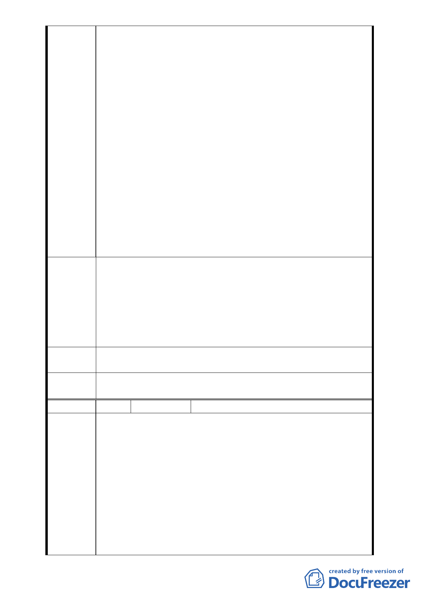

松山菸廠歷史古蹟之文化傳承，臺灣菸草最大的產地乃高雄
縣美濃鎮，日治時期松山菸廠建廠後，就倚賴縱貫鐵路將菸
草送至北部地區，再經松山菸廠北側鐵道將桶裝菸草送入松
山菸廠，菸草加工製造後再利用北側鐵道將成品運出去。據
此松山菸廠具有非常重要的歷史文化意涵，應予保留重建併
納入松菸文化園區的範圍，讓後人更容易了解「松山菸草工
場」，北側道路之開闢與交通動線規劃則應重新考量。
3. 松菸公園催生聯盟長期關注松山菸廠的老樹，用儘心力只為
了能夠原地保留這些珍貴的林木，但在樹保委員會的瀆職與
環評審查的配合下，整片日治時期留存下來的珍貴綠地，遭
到最慘酷無情的屠殺，數百株老樹因不當的移植過程而死
亡，甚至連最大的那棵老樟樹，也因移植後文化局與公燈處
的養護不力而於日前枯死。本案開發範圍內的樹已被文化局
移走了，而這些樹木大都是日治時期就種植在松山菸廠，其
中蒲葵是夏季樹木，移植季節應該在夏天，卻也在寒冷的冬
天遭到移植，另人擔憂體育園區的悲劇是否又將發生在文化
園區裡。松菸公園催生聯盟嚴重譴責臺北市政府文化局沒有
文化的行為。
98年11月17日「變更臺北文化體育園區北側第三種工業區
為道路用地細部計畫案」說明會會中台鐵公司代表也有與會，
明確反對北側道路的開闢，也說明該公司正在重新規劃臺北機
建議辦法 場的土地利用，會在近期提出都市計畫變更的申請。松菸公園
催生聯盟主張「台北文化體育園區」應重新規劃，結合台鐵臺
北機場的大面積土地，以都市計畫百年大計的思維，為下一代
的孩子留下更永續的臺北市。
專案小組
審查結論
同編號 2
委員會決
議
同編號 1
編 號 17
陳情人 新仁里李財久里長
臺北市信義區新仁里里長李財久：
１文化體育園區開發之交通問題已模糊焦點，另荷花池具歷史
性，反對填土及拆涼亭，請以原貌保存。
２交通規劃請採用地下道設計。
陳情理由
３不應為了開發利益，而影響臺北市利益。北側道路影響社區
最大，並非與社區無關。請文創承諾將來不會影響社區，另
本案至今未至社區辦理說明會。
（以下為書面意見）
１針對本次都市計畫審查會開會時間的安排，本里在此表達最
嚴正的抗議。這個案子開發的地點是我們的新仁里，希望審
- 16 -